Emerson Fittipaldi
Emerson Fittipaldi
Emerson Fittipaldi (São Paulo, 1946. december 12. –) brazil autóversenyző, az open-wheel versenysorozat egyik legsikeresebb pilótája, a Formula–1-ben kétszeres, a Champ Car-ban egyszeres bajnok, és kétszeres Indy 500 győztes.
Pályafutása
Emerson Fittipaldi
Az aktív versenyzést kezdetben 50 cm³-es, majd 125 cm³-es motorokkal kezdte. 1967-ben a Brazil Formula-V-ben szerzett bajnoki címet egy Porsche motoros Volkswagennel.
1970-ben debütált a Formula–1-ben a Lotus csapatnál harmadik versenyzőként Jochen Rindt és John Miles mellett. 1970-ben hozzásegítette Rindtet posztumusz világbajnoki címéhez Jacky Ickx ellen. Az ez évi amerikai nagydíjat pedig meg is nyerte Watkins Glenben. 1973-ig maradt Colin Chapman csapatánál, és 1972-ben világbajnok lett. 1973-ra Ronnie Peterson lett a csapattársa. Ez évben Fittipaldi második, Peterson harmadik lett Jackie Stewart mögött. Emerson Fittipaldi valószínűleg úgy érezhette, hogy Chapman Petersont jobban támogatja mint őt, ezért 1974-re átigazolt a McLarenhez. Stewart visszavonulása után a Tyrrell visszaesett. Emerson megnyerte a Ferrari és Clay Regazzoni elől a világbajnoki címet. 1975-ben két győzelmet aratott és második lett az egyéni bajnokságban a ferraris Niki Lauda mögött.
A szezon után átigazolt a testvére, Wilson által alapított "Copersucarhoz". Emerson 1980-ig maradt a csapatban és a Formula–1-ben, győzelem nélkül. Csapattársa ekkor Keke Rosberg volt. A csapat 1982-ig maradt fenn különösebb eredmények nélkül.
1984 és 1996 között Fittipaldi az IndyCar versenysorozatban vett részt. 1989-ben megnyerte a világbajnokságot és az az évi indianapolisi 500-at. 1993-ban ismét sikerült nyernie az 500 mérföldes versenyt. 1996-os, a Michigani pályán történt súlyos balesete után visszavonult a versenyzéstől. Később csapatfőnök volt az A1 GP-ben. 2005-ben a Grand Prix Mastersben második lett Nigel Mansell mögött.
2001-ben bekerült az Amerikai Motorsportok Hírességeinek Csarnokába.
Fittipaldi a popkultúrában
A magyar szlengben valamilyen okból az összes nagy autóversenyző közül leginkább pont az ő neve terjedt el a bevállalós, vezetni jól tudó (de főleg inkább csak a magukról azt gondoló) sofőrökre. (Pl: "Azt hiszi, hogy ő mekkora Fittipaldi", "fittipaldizik", "Úgy vezet, mint Fittipaldi fénykorában", stb.) Valószínűleg az 1970-es évek első felében, Fittipaldi legnagyobb sikerei idején keletkezhettek ezek a szólások, amikor éppen elkezdtek nagydíjakat rendezni az Österreichringen, így a közelség miatt Magyarországon is többen megismerhették a Formula–1-et.
Eredményei
Aktív évei 1970 – 1980
Korábbi csapatai GBR Lotus (1970–1973), GBR McLaren (1974–1976), BRA Fittipaldi (1977–1980)
Nagydíjak száma 149 (144 rajt)
Világbajnoki címek 2 (1972, 1974)
Győzelmek 14
Dobogós helyezések 35
Első rajtkockák 6
Leggyorsabb körök 6
Fotók
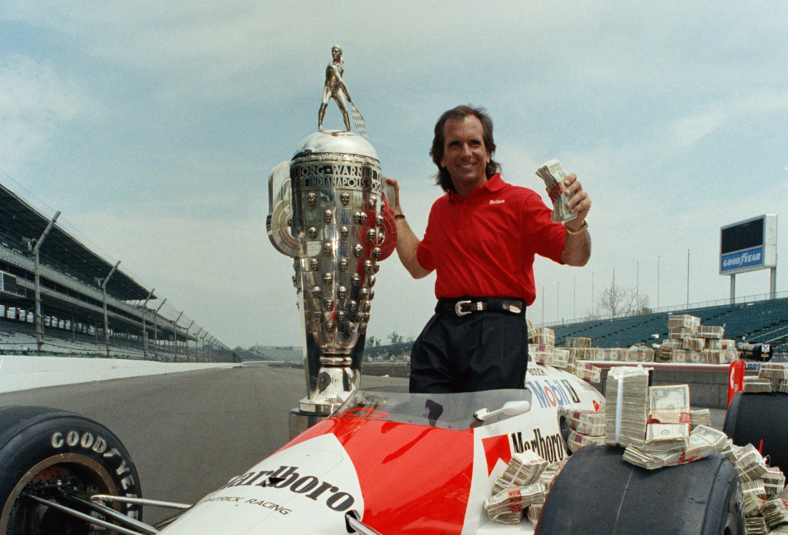
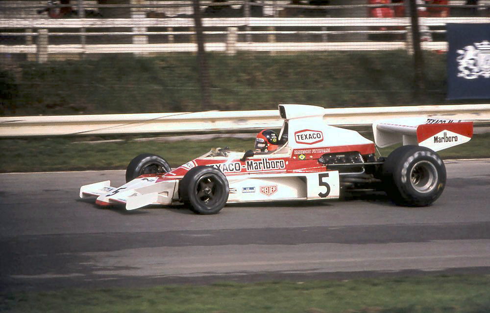
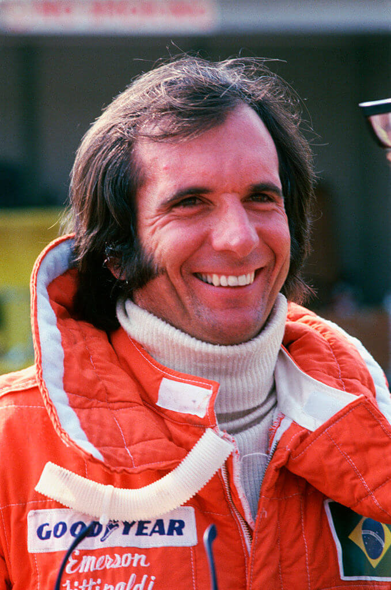
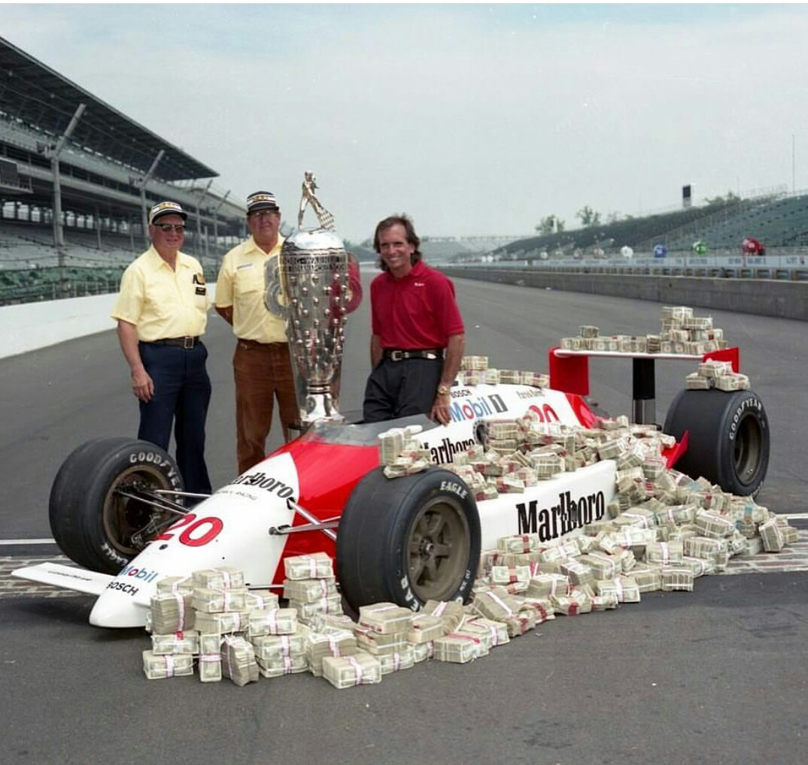
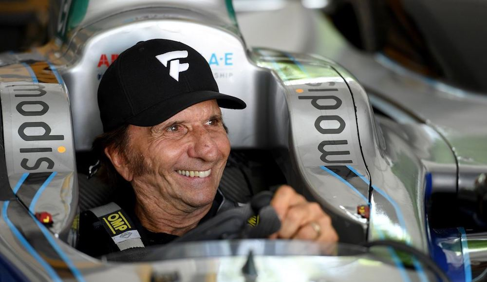
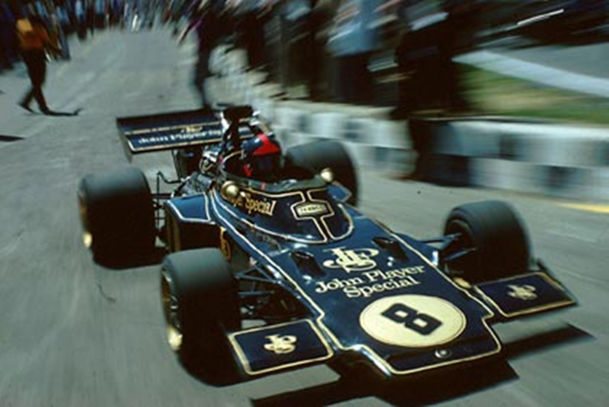
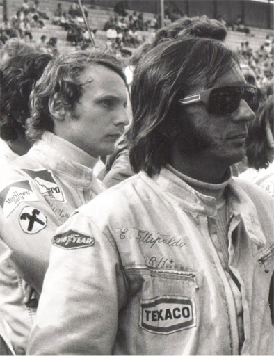
 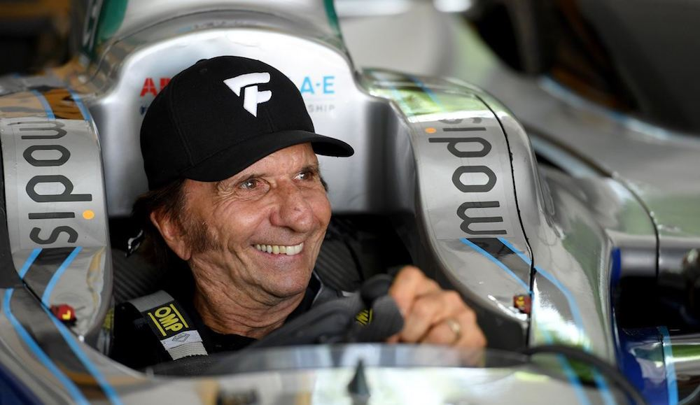
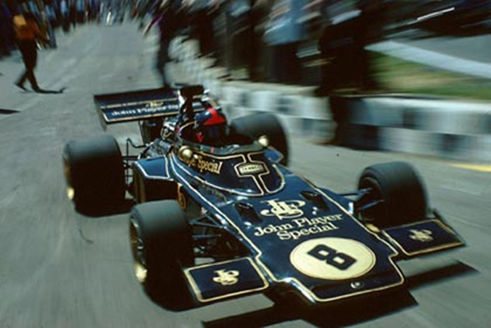
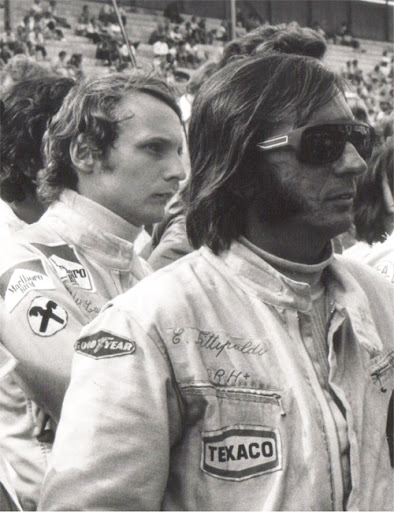
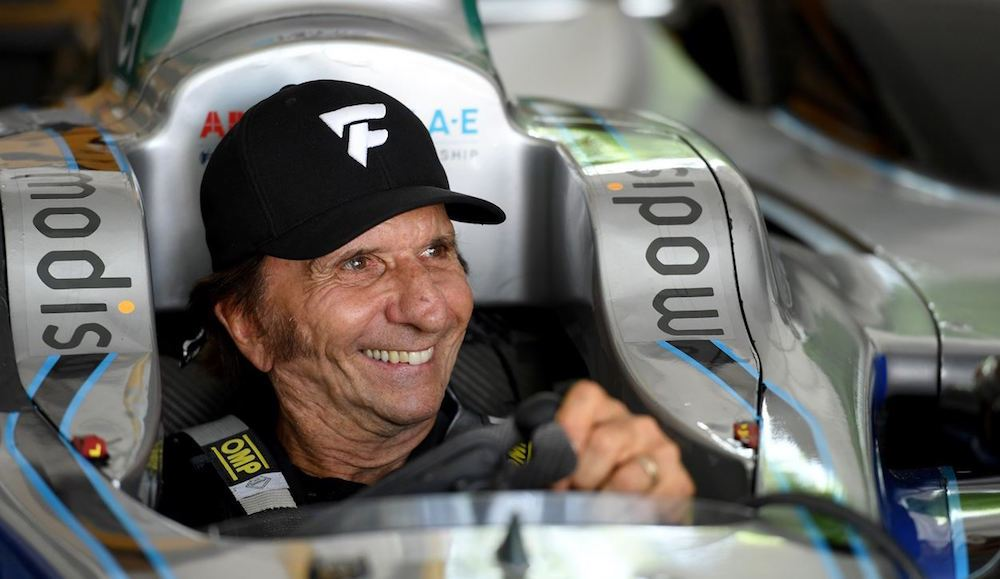
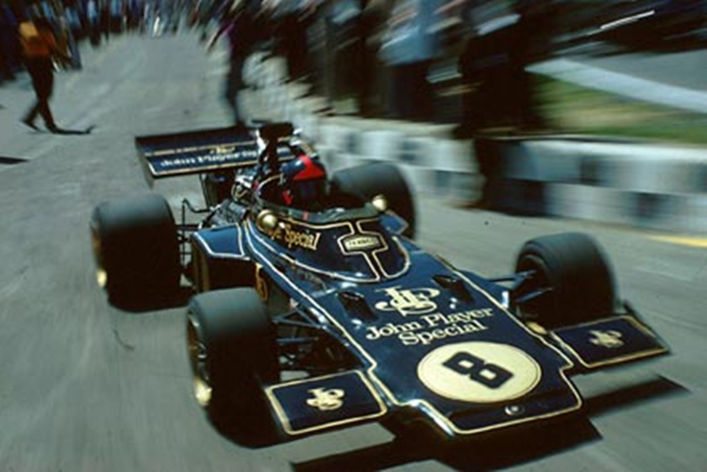
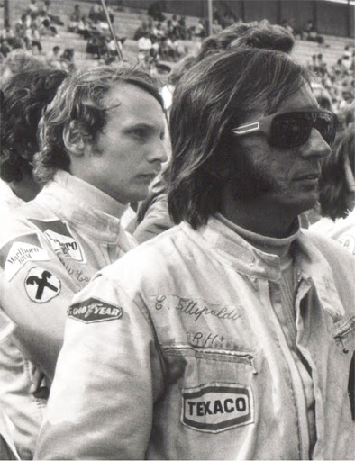